X was assigned, and using that information we were
able to get a good estimate of the true treatment# Is your company in tech? Let's say 30% of firms are
df <- tibble(tech = sample(c(0,1),500,replace=T,prob=c(.7,.3))) %>%
#Tech firms on average spend $3mil more defending IP lawsuits
mutate(IP.spend = 3*tech+runif(500,min=0,max=4)) %>%
#Tech firms also have higher profits. But IP lawsuits lower profits
mutate(log.profit = 2*tech - .3*IP.spend + rnorm(500,mean=2))
# Now let's check for how profit and IP.spend are correlated!
cor(df$log.profit,df$IP.spend)## [1] 0.1122291cor(df$log.profit,df$IP.spend) is the influence of being a
tech company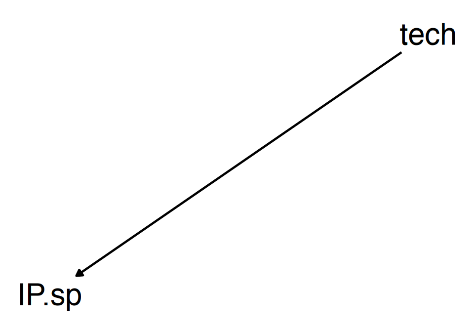
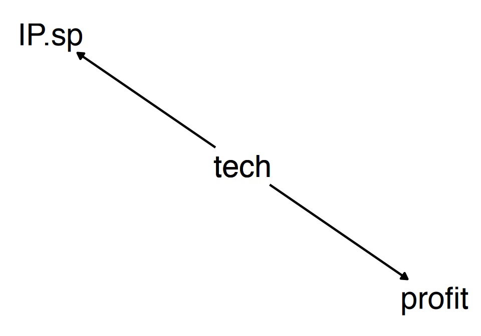
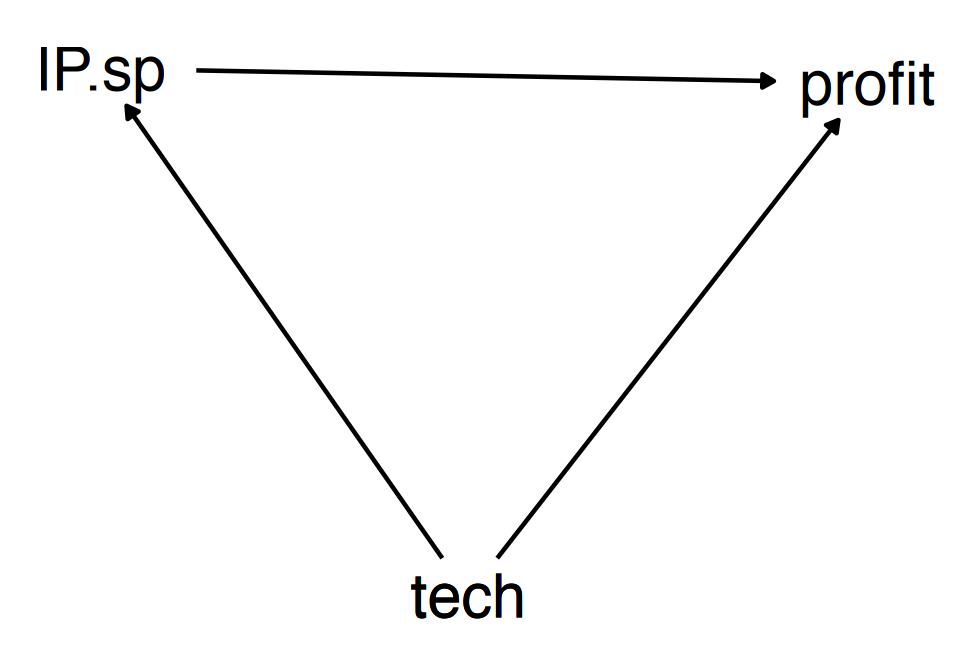
IP.spend, which then affects profit.IP.spend on
profit, we can figure that out tooIP.spend -> profit, and seeing what the effect is on
that arrow!IP.Spend and profit can be explained
by how tech links the two.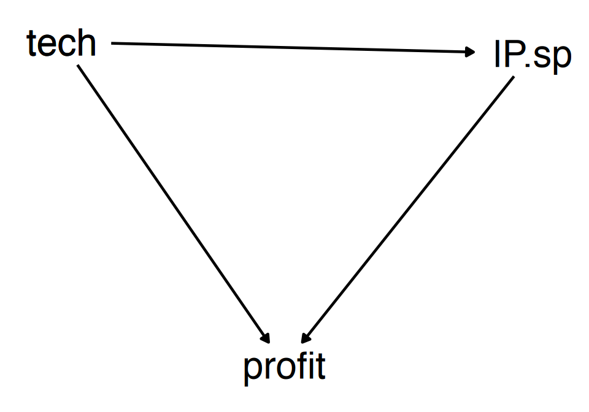
tech, but we want to identify the part of the
correlation that ISN’T explained by tech (the causal part),
we will want to just use what isn’t explained by tech!
tech to explain profit, and take the
residualtech to explain IP.spend, and take the
residualtech” and taking out the part of the
relationship that is explained by ittech as a control)IP.spend and profit just comparing firms
that have the same level of tech.df <- df %>% group_by(tech) %>%
mutate(log.profit.resid = log.profit - mean(log.profit),
IP.spend.resid = IP.spend - mean(IP.spend)) %>% ungroup()
cor(df$log.profit.resid,df$IP.spend.resid)## [1] -0.3163876| (Intercept) | 1.474*** | 1.930*** |
| (0.094) | (0.090) | |
| IP.spend | 0.070* | -0.280*** |
| (0.028) | (0.038) | |
| tech | 1.809*** | |
| (0.148) | ||
| Num.Obs. | 500 | 500 |
| R2 | 0.013 | 0.241 |
| RMSE | 1.12 | 0.98 |
|
||
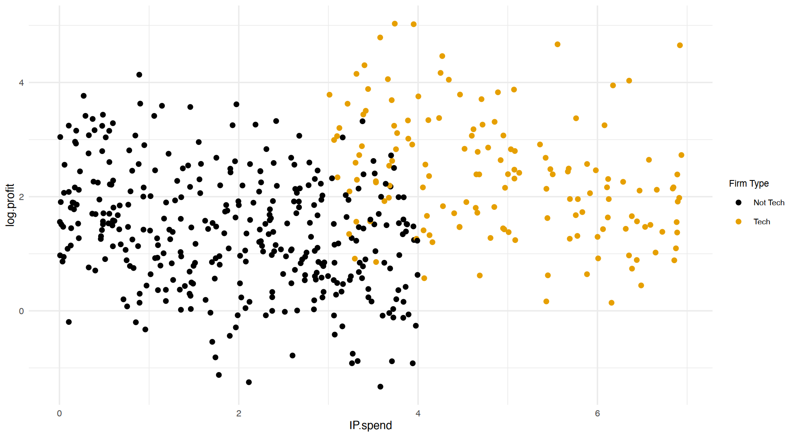
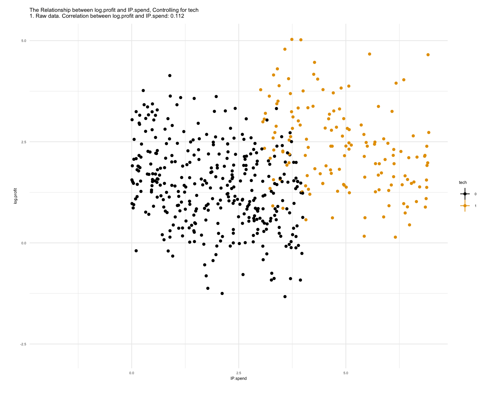
tech (“holding it constant”) we got
rid of the part of the IP.spend/profit
relationship that was explained by tech, and so managed to
identify the \(IP.spend \rightarrow
profit\) arrow, the causal effect we’re interested in!techprofit (y), IP.spend (x),
and tech (z) are all related… which is it?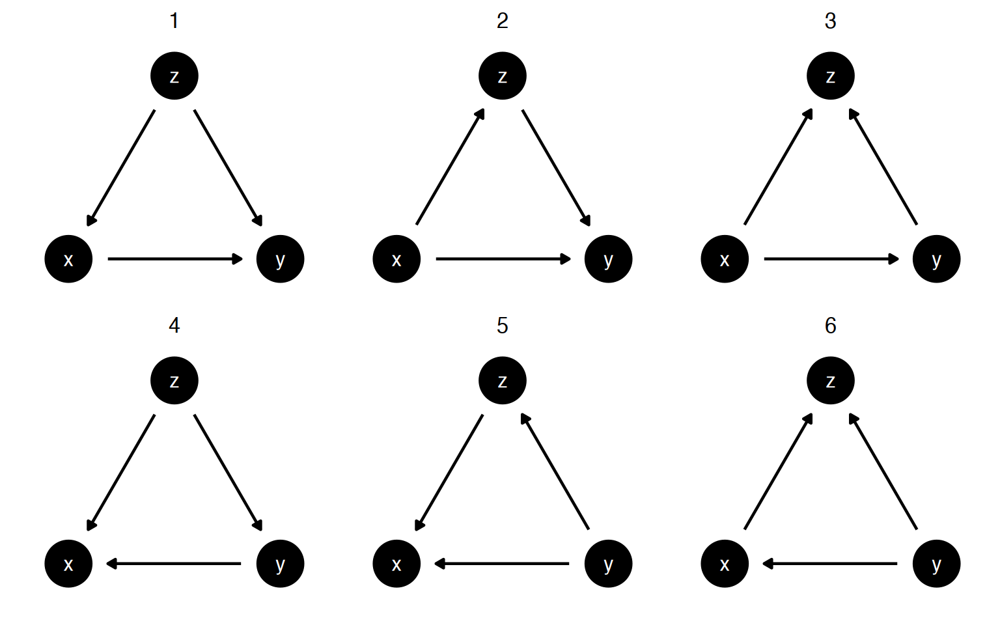
IP.spend causes companies to be tech
companies (in 2, 3, 6)Look at the diagram on the next page, intended to be a model of fertility decisions in Switzerland based on education and whether one comes from an agricultural family.
Ask:
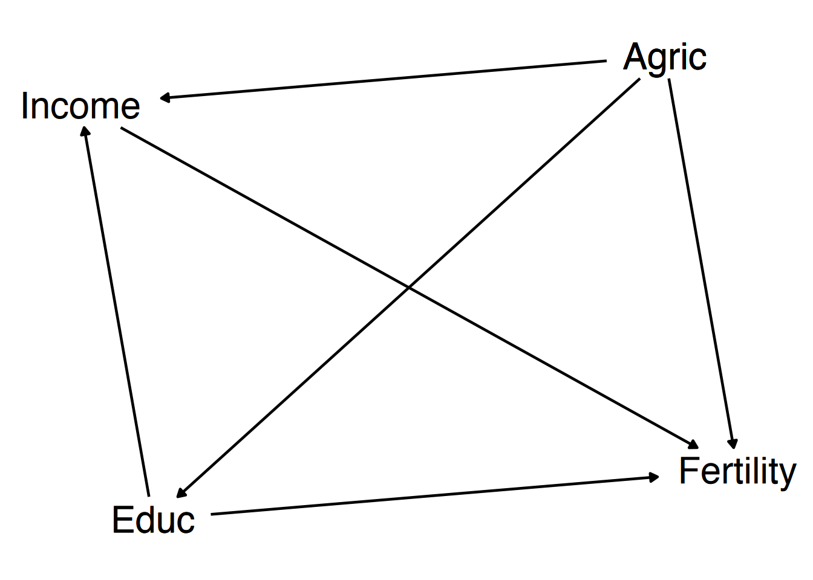
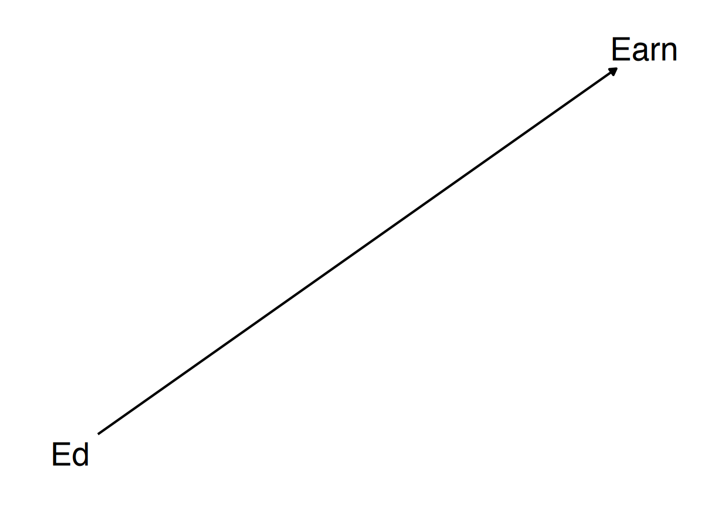
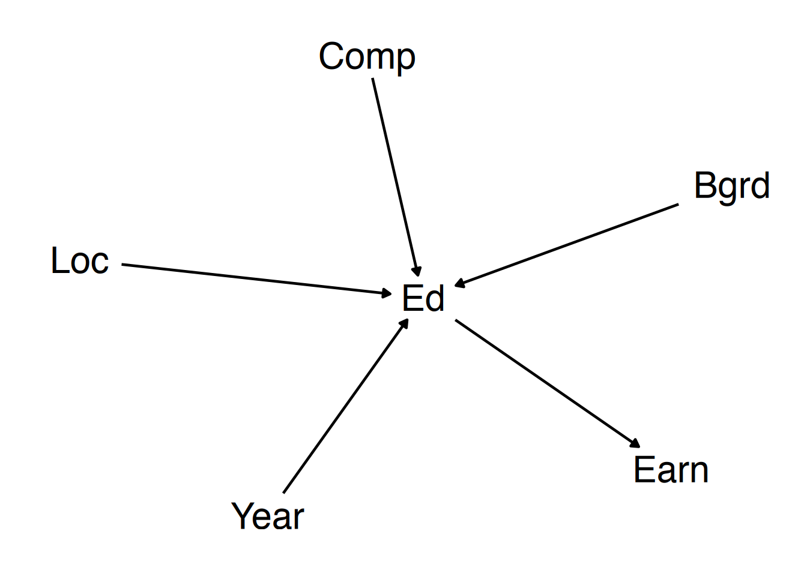
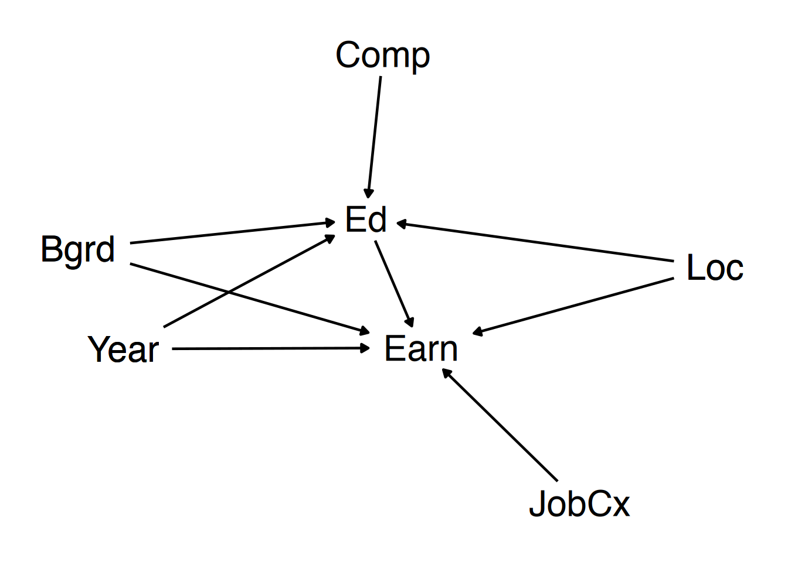
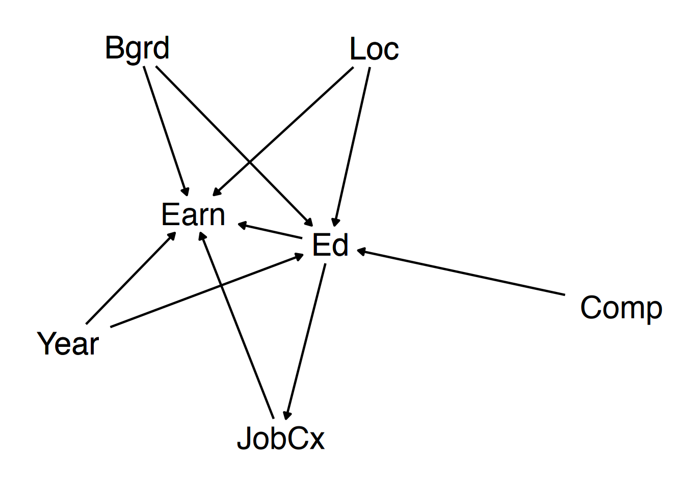
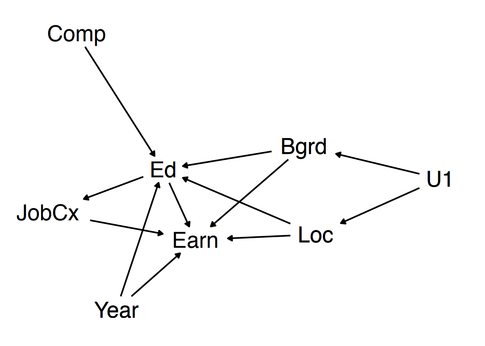
X, then once on
another variable Y to get an arrow for
X -> Y